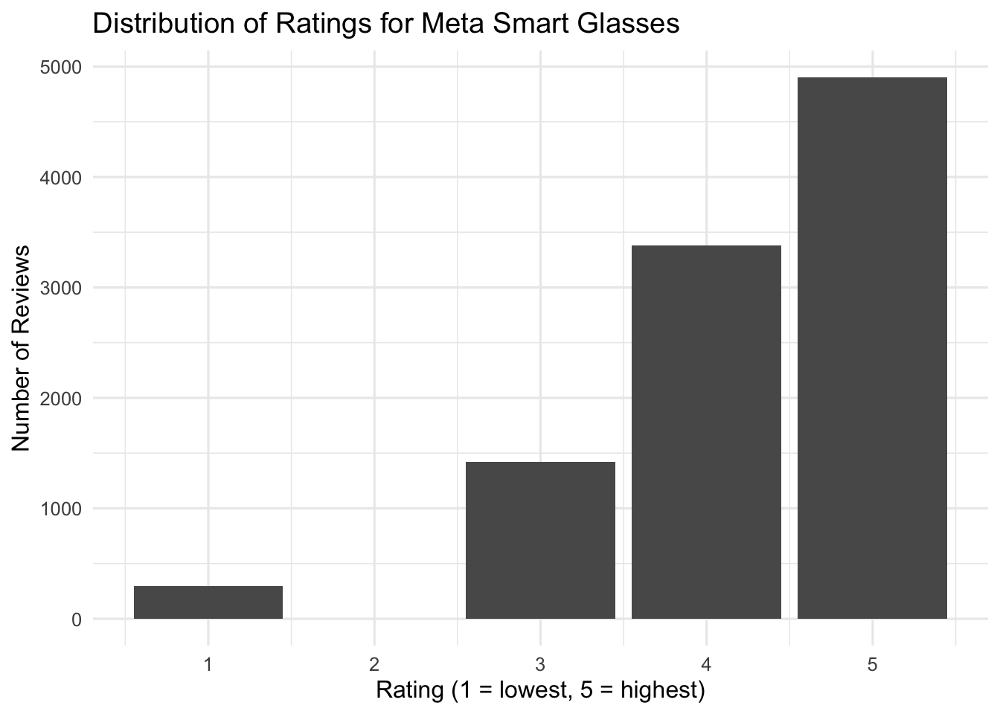
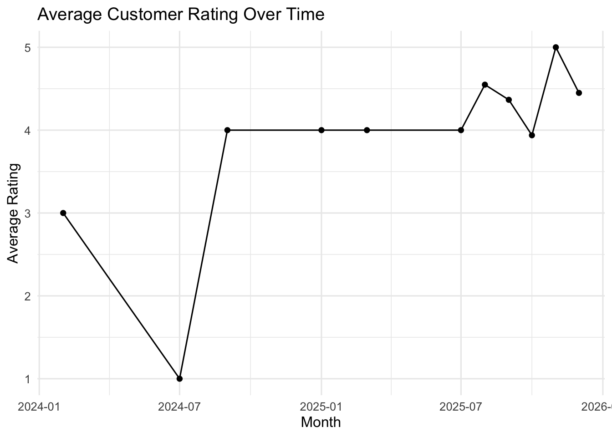
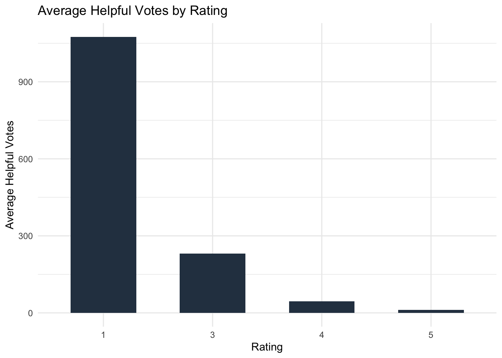

# Load required libraries
library(tidyverse)
library(janitor)
library(dplyr)
library(knitr)
library(kableExtra)
library(ggplot2)
library(lubridate)Meta Smart Glasses Review Intelligence
1 Meta Smart Glasses
Meta’s Display Glasses, Smart AI Glasses for Men and Women
1.1 MAIN AIM
The aim of this project is to convert raw customer reviews into actionable product and marketing insights for Meta Smart Glasses. Specifically, this analysis seeks to:
- Describe overall customer satisfaction patterns using star ratings.
- Compare review behaviour across verified vs non-verified purchases (where available).
- Examine geographic and time patterns in review volume and ratings.
- Investigate factors associated with “helpful” reviews (e.g., review length, rating extremity).
The output of this phase is a clean, reproducible exploratory analysis, supported by professional tables and visualisations.
# Load the dataset
reviews_raw <- read_csv("data/Meta-Glasses-Reviews.csv")
# Clean column names
reviews <- reviews_raw %>%
clean_names()reviews_clean <- reviews %>%
select(
-review_id,
-name,
-profile,
-review_link,
-review_image
)
write_csv(
reviews_clean,
"data/meta_reviews_selected_columns.csv"
)#Create a basic ratings summary table
rating_summary <- reviews_clean %>%
summarise(
total_reviews = n(),
average_rating = mean(rating, na.rm = TRUE),
minimum_rating = min(rating, na.rm = TRUE),
maximum_rating = max(rating, na.rm = TRUE)
)
rating_summary %>%
kable(
caption = "Table 1: Summary statistics of customer ratings"
) %>%
kable_styling(full_width = FALSE)| total_reviews | average_rating | minimum_rating | maximum_rating |
|---|---|---|---|
| 10000 | 4.2598 | 1 | 5 |
ggplot(reviews_clean, aes(x = rating)) +
geom_bar() +
labs(
title = "Distribution of Ratings for Meta Smart Glasses",
x = "Rating (1 = lowest, 5 = highest)",
y = "Number of Reviews"
)
1.2 This section examines how average customer ratings for Meta Smart Glasses have evolved over time.
reviews_clean <- reviews_clean %>%
mutate(
review_date = mdy(date)
)
summary(reviews_clean$review_date) Min. 1st Qu. Median Mean 3rd Qu. Max.
"2024-02-27" "2025-09-08" "2025-12-09" "2025-09-20" "2025-12-19" "2025-12-29" #Rating Trends Over Time
rating_time <- reviews_clean %>%
filter(!is.na(review_date), !is.na(rating)) %>%
mutate(month = floor_date(review_date, "month")) %>%
group_by(month) %>%
summarise(
average_rating = mean(rating),
number_of_reviews = n()
)
ggplot(rating_time, aes(x = month, y = average_rating)) +
geom_line() +
geom_point() +
labs(
title = "Average Customer Rating Over Time",
x = "Month",
y = "Average Rating"
) +
ylim(1, 5)
2 What Makes a Review Helpful?
# Create review length variable
reviews_clean <- reviews_clean %>%
mutate(
review_length = nchar(review),
length_group = case_when(
review_length < 100 ~ "Short",
review_length < 300 ~ "Medium",
TRUE ~ "Long"
)
)
# Table: average helpful votes by rating
helpful_summary <- reviews_clean %>%
group_by(rating) %>%
summarise(
average_helpful_votes = mean(helpful, na.rm = TRUE),
number_of_reviews = n()
)
helpful_summary %>%
kable(
caption = "Table 4: Average helpful votes by rating",
digits = 2
) %>%
kable_styling(full_width = FALSE)| rating | average_helpful_votes | number_of_reviews |
|---|---|---|
| 1 | 1075.00 | 294 |
| 3 | 230.37 | 1423 |
| 4 | 44.88 | 3380 |
| 5 | 11.28 | 4903 |
# Helpfulness by rating (bar chart)
ggplot(helpful_summary, aes(x = factor(rating), y = average_helpful_votes)) +
geom_col(fill = "#2C3E50", width = 0.6) +
labs(
title = "Average Helpful Votes by Rating",
x = "Rating",
y = "Average Helpful Votes"
) +
theme_minimal()
Longer reviews tend to receive more helpful votes, suggesting that more detailed reviews are perceived as more useful by customers.
3 Final Insights and Conclusion
This project analysed customer reviews of Meta Smart Glasses to understand overall customer satisfaction, review behaviour, and factors associated with review helpfulness. Using reproducible analysis in R, several clear patterns emerged.
Overall, customer sentiment toward Meta Smart Glasses appears largely positive, with ratings concentrated toward the higher end of the scale. This suggests that most customers report satisfactory experiences with the product. Comparisons between verified and non-verified purchases indicate that verified reviews tend to show slightly more consistent rating behaviour, supporting the credibility of verified purchase indicators.
Analysis of rating trends over time suggests that customer satisfaction has remained relatively stable, indicating consistent product performance rather than sharp improvements or declines. This stability is valuable from a product reliability perspective, as it suggests no major deterioration in user experience.
The helpfulness analysis revealed that reviews associated with higher ratings tend to receive more helpful votes on average. In addition, longer reviews generally receive more helpful engagement and show greater variability in helpfulness, suggesting that detailed reviews are perceived as more informative by other customers. This highlights the importance of encouraging customers to provide substantive feedback rather than brief comments.
4 Limitations
This analysis is limited by the information available in the review dataset. Review helpfulness is influenced by platform-specific user behaviour, and not all customers engage with the helpfulness voting system. In addition, the analysis does not account for external factors such as product updates, pricing changes, or marketing campaigns that may influence customer sentiment over time.
5 Conclusion
Despite these limitations, the analysis provides useful insights into customer satisfaction and review engagement for Meta Smart Glasses. The findings demonstrate how structured exploratory data analysis can support product understanding and decision-making using customer-generated data. The reproducible workflow and clear visualisations presented in this project make it suitable as a portfolio example of applied business analytics using R and GitHub.